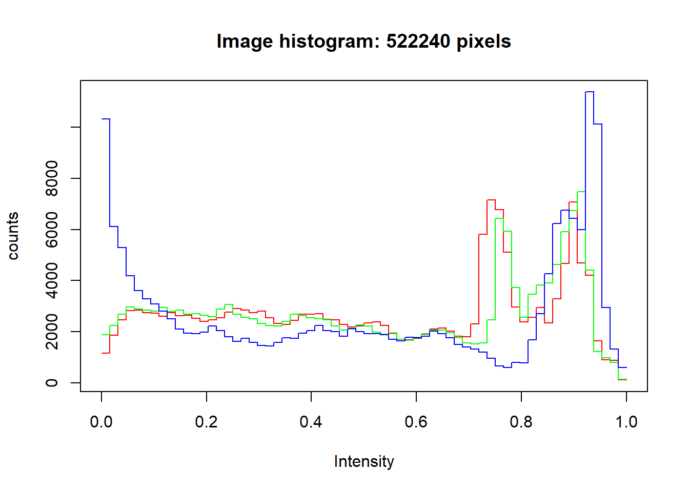

Penambahan Watermark Pada RStudio RMarkdown
Firyal Nabila Zalfa
UIN Maulana Malik Ibrahim Malang
26 April 2021
What is Watermark?
Watermark atau tanda air adalah sebuah tanda baik berupa tulisan maupun gambar logo yang tertanam pada foto atau gambar digital. Tanda ini biasanya memberikan informasi kepada orang lain bahwa foto tersebut adalah hasil karya miliknya.
Watermark biasanya terletak pada bagian kiri atau kanan dari foto. Tidak hanya pada foto watermark juga bisa pada sebuah website, seperti yang sekarang kita lakukan. Kali ini kita akan membuat watermark pada RMarkdown.
Cara Menambahkan Watermark Pada halaman Web RMarkdown
Untuk menambahkan watermark pada halaman web kita harus membuat file .css untuk mengatur letak dan transparisasi watermark. pada file .css berisi source code sebagai berikut:
.watermark {
opacity: 0.2;
position: fixed;
top: 50%;
left: 50%;
font-size: 100%;
color: #00407d;
}Setelah kita membuat file .css, selanjutnya kita membuat file .Rmd untuk menambahkan watermark pada halaman web, kita bisa menambahkannya dengan menulis source code pada file .Rmd. Waterwark dapat berupa tulisan maupun gambar.
Untuk tulisan source code-nya seperti berikut:
<div class="watermark">INI WATERMARK</div>
Untuk gambar source code-nya seperti berikut:
<div class="watermark"><img src="..."></div>Setelah membuat file .css dan .Rmd, selanjutnya menghubungkan kedua file tersebut dengan source code berikut:
---
title: "..."
author: "..."
date: "..."
output:
html_document:
css: watermark-css.css
---Cara Menambahkan Watermark Pada Gambar
Untuk menambahkan watermark pada gambar, pastikan dulu kita sudah menginstal package EBImage di RStudio. Untuk menginstalnya dengan menuliskan source code pada console:
if(!requireNamespace("BiocManager", quietly = TRUE))
install.packages("BiocManager")
BiocManager::install("EbImage")
Setelah selesai diinstal, selanjutnya kita memanggil library EBImage untuk memastikan bahwa package EBImage sudah terpasang di RStudio. Jika tidak menampilkan apa-apa/kosong itu menandakan bahwa package EBImage sudah siap/terpasang di RStudio kita. Untuk memanggil library EBImage dengan menuliskan source code berikut:
library(EBImage)Untuk mengimport gambar pastikan bahwa lokasi gambar yang ada pada device kita sesuai, dan ubah tanda menjadi / seperti source code berikut:
Image <- readImage("C:/Users/ASUS/OneDrive/Pictures/kampusUIN.jpg")
display(Image)Untuk melihat data dari gambar menggunakan print(Image). Pada source code ini akan menampilkan sifat gambar, nilai-nilai piksel, dan informasi lainnya.
print(Image)## Image
## colorMode : Color
## storage.mode : double
## dim : 512 340 3
## frames.total : 3
## frames.render: 1
##
## imageData(object)[1:5,1:6,1]
## [,1] [,2] [,3] [,4] [,5] [,6]
## [1,] 0.9647059 0.9411765 0.9215686 0.9215686 0.9254902 0.9254902
## [2,] 0.9607843 0.9372549 0.9215686 0.9215686 0.9254902 0.9254902
## [3,] 0.9529412 0.9333333 0.9176471 0.9176471 0.9215686 0.9215686
## [4,] 0.9490196 0.9294118 0.9176471 0.9215686 0.9254902 0.9215686
## [5,] 0.9411765 0.9254902 0.9137255 0.9215686 0.9254902 0.9176471Untuk melihat histogram dari gambar menggunakan hist(Image) seperti source code berikut:
hist(Image)
Dan untuk menambahkan watermark pada gambar berupa tulisan, dengan source code berikut:
display(Image, method="raster")
text(x = 20, y = 20, label = "UIN Maulana Malik Ibrahim Malang", adj = c(0,1), col = "white", cex = 2)Dengan adanya watermark kita bisa tahu hasil karya kita sendiri agar tidak mudah dijiplak oleh orang lain.